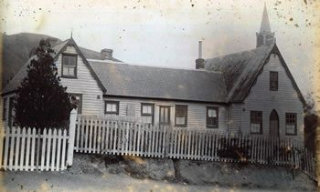

Education Focus: Father Garin established schools to provide religious and secular education for Māori and European children, fostering a spirit of community engagement and promoting cultural understanding among diverse groups.
Mission Work: He founded numerous missions and parishes in the Wellington region, including Wairarapa and Nelson, playing a crucial role in the expansion of Catholicism and strengthening the Church’s presence in New Zealand.
Māori Advocacy: Garin respected Māori culture, learned the language, and advocated for their rights, emphasizing the importance of cultural preservation and fostering positive relationships between Māori and European settlers.
Legacy: He is remembered for his unwavering dedication to building churches and schools, significantly shaping the Catholic community and influencing future generations through his commitment to education and faith.